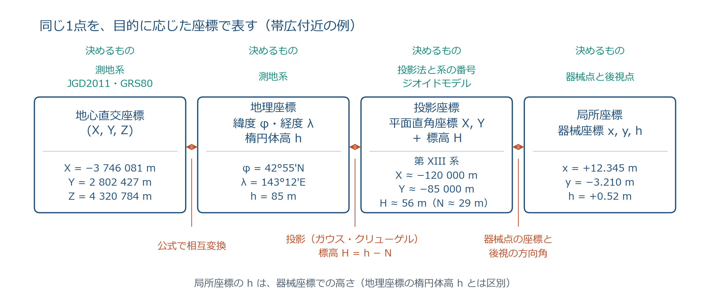

第3回「測量の座標」講師用解説
一本の筋と、教えるときに意識すること
対象はこの回を教える講師本人。81 枚のスライドがどういう思想で並んでいるか、どんな背景があるか、学生に何を意識させれば伝わるかをまとめた。スライド本体は slides.md、時間配分は lesson_plan.md にある。
0. 要旨：この回を一文で言うと
この文書で繰り返す言葉は三つだけである。約束（座標は自然にあるものではなく、人が決めた対応規則）、形と置き場所（観測は形を決め、約束が置き場所を決める）、幾何と物理（楕円体は幾何の地球、ジオイドは重力の地球）。この三つを授業中に何度も口にすると、個々の数値（450 m、29 m、0.9999、6°、19 系）がすべて「約束の違いが数になったもの」として一つにまとまる。
1. 思想：測量学にとって座標とは何か
1.1 観測できるのは「形」だけ
巻尺も、トータルステーション（TS）も、GNSS も、直接測っているのは距離と角である。GNSS でさえ、衛星までの距離を測っているに過ぎない。どの機器も「この杭の座標は (X, Y) である」と測っているわけではない。
数学で言えば、距離と角は座標変換（平行移動・回転）の不変量である。座標系を変えても変わらない量だけが観測できる、と言い換えてもよい。したがって観測だけで決まるのは図形の「形」であって、その図形を地球上のどこに、どの向きで置くかは観測からは決まらない。
ここが本回の根本である。スライド 15（座標変換の不変量）は、単なる数学の復習ではなく「測量が距離と角の観測で成り立っている理由」を述べている。この一枚を「だから測量は距離と角を測る」と結ぶかどうかで、以降の全部の意味が変わる。
1.2 位置は「約束」で決まる
形が決まっても、置き場所が決まらない。置き場所を決めるのが既知点、すなわち基準点である。基準点の座標は誰かが「この杭を (X, Y, H) とする」と決めたものであり、その決め方の規則が座標参照系（CRS）である。スライド 18 で「約束の 3 点セット」と呼んでいるのはこれで、
- どの地球の形を使うか（測地系：楕円体の大きさと置き方、いつの時点か）
- どの種類の数で表すか（緯度経度か、平面直角座標か。平面ならどの投影でどの系か）
- 高さの 0 をどこに置くか（ジオイド、日本なら東京湾平均海面）
の三つを決めて初めて、杭の座標という数が一意に決まる。同じ杭でも約束が違えば数は違う（スライド 20 の「同じ杭を 3 通りで」）。GIS で EPSG コードを選ぶ画面は、この 3 点セットを指定している。
数学の座標は頭の中の約束で済むが、測量の座標は地面に打った基準点という実物で約束を支えている。国際的な言い方では、定義（座標系、system）と、実物の点の座標で実現したもの（座標枠、frame）を区別する。ITRS と ITRF、日本なら JGD2011 という定義と、電子基準点・三角点の成果という実現、という関係である。学生にここまで言う必要はないが、講師がこの区別を持っていると「成果が改定される」「元期と今期」の話が自然に説明できる。
1.3 約束が階層になる理由：地球は曲がり、でこぼこで、動く
もし地球が平らで、重力が一様で、動かなければ、約束は「原点と軸の向き」一つで済み、本回は 3-4 と 3-5 だけでよかった。階層が必要になるのは地球の三つの性質のせいである。
| 地球の性質 | 生じる問題 | 対応する約束（節） |
|---|---|---|
| 曲がっている | 平面の直角座標をそのまま貼れない（みかんの皮）。曲面のまま表すか、ひずみを管理して平面に写すかの二系統が要る | 地理座標と投影座標（3-1 の 17 枚目、3-3 の投影、3-4） |
| でこぼこしている（重力が一様でない） | 滑らかな楕円体では「水平」「高さ」が決まらない。水は重力に従うので、高さの基準は幾何ではなく物理で決める | ジオイドと標高（3-2） |
| 動く（プレート運動・地震） | 基準点の座標が時間で変わる。いつの時点の座標かを決めないと成果が整合しない | 元期、測地成果 2011/2024、セミ・ダイナミック補正（3-3 の 44・45 枚目） |
この表を講師が頭に置いておくと、3-2 と 3-3 の 20 数枚が「なぜここにあるか」が一目で分かる。学生には「地球の三つの意地悪」のように砕いて言ってもよい。
1.4 三つの対比
本回の内容は、三つの対比のどれかに必ず帰着する。試験の誤文も、この対比のどちらかを取り違えたものとして読める（第 5 節）。
| 対比 | 内容 | 出てくる場面 |
|---|---|---|
| 形 と 置き場所 | 観測（距離・角）が形を決め、約束（基準点・CRS）が置き場所を決める | 15・18 枚目、順計算で既知点が要る理由、基線ベクトルの斜距離が軸によらない理由（36） |
| 幾何 と 物理 | 楕円体（幾何、GNSS が計算する）と、ジオイド（重力、水が従う・レベルの気泡が従う）。法線と鉛直線、測地緯度と天文緯度、楕円体高と標高 | 3-2 全体、h = H + N、水の流れ（30）、測量法第 11 条の「地理学的経緯度」（43） |
| 曲面 と 平面 | 曲面のまま（緯度経度）か、ひずみを管理して平面に写すか（投影）。ひずみは消せないので数値（縮尺係数）で管理する | 17 枚目、3-3 の投影 5 枚、縮尺係数（51）、距離の 4 段階（52〜55） |
2. 一本の筋：81 枚を一つの物語として読む
2.1 約束の梯子（授業中ずっと見せる地図）
下の梯子が本回の全体図である。左の列が「約束」、右の列が「観測値がどう登り降りするか」。上ほど地球全体、下ほど現場。GNSS は上から下へ降りてきて座標を表示し、TS は下から登って平面直角座標に乗せる。板書なら左端に縦に 6 段書いておき、節が変わるたびに今いる段を指す。スライド 19（coord_hierarchy）はこの梯子の中段 4 段を図にしたものである。
GNSS：③ → ④ → ⑤（受信機が自動で降りる。設定が違うと⑤で数十 km、④で数十 m ずれる）。TS：⑥ → ⑤（器械が自動で登る。縮尺係数を 1 のままにすると数 cm ずれる）。距離の 4 段階（52 枚目）は ⑥ → ④ → ⑤ を手で登る手順である。

2.2 節ごとの役割
各節が物語の中で果たす役割と、その節が終わったときに学生に残っていてほしい一文。
| 節（枚） | 梯子の段 | 物語の中の役割 | 残す一文 |
|---|---|---|---|
| 導入・小テスト（1〜13） | — | 前回の「数はばらつく」から、今回の「数をどこに置くか」へ切り替える | 「前回は測った値の信頼度、今日は測った値の置き場所」 |
| 3-1 座標とは何か（14〜20） | 梯子の説明そのもの | 座標は約束であること、観測で決まるのは形だけであること、地球が曲面なので約束が二系統になること、約束は 3 点セットであること。本回の憲法 | 「機器は形を測る。位置は約束で決まる」 |
| 3-2 地球の形とジオイド（21〜31） | ①、④の高さ | 高さの約束。幾何（楕円体）だけでは水の向きが決まらないので物理（重力）の面が要る。農業土木がジオイドを学ぶ理由を水の流れで示す | 「GNSS の高さは幾何、水が従う高さは物理。差がジオイド高」 |
| 3-3 測地系と座標系の種類（32〜46） | ②③④⑤ | 水平の約束。どの楕円体をどう置くか（測地系）、曲面のまま表す座標（地理・地心）、平面へ写す約束（投影）、日本の制度（法・原点・成果・元期）。最も長く、二つの話（約束の実体と投影）が同居する | 「同じ杭でも、楕円体の置き方が違えば 450 m、時点が違えば数 cm 違う。平面に写すならひずみを管理する」 |
| 3-4 平面直角座標系と距離の換算（47〜58） | ⑤、⑥→④→⑤ | 日本の平面の約束の中身（19 系、X 北、0.9999）と、観測した距離をその平面まで運ぶ 4 段階。「ひずみを数値で管理する」の実装 | 「設計図の距離は平面の距離。現地で測るのは水平距離。間に標高補正と縮尺係数が挟まる」 |
| 3-5 方向角と座標計算（59〜71） | ⑥→⑤ | 平面に乗ったあとの計算。北から右回りという約束、順計算・逆計算、象限。第 5・6 回トラバースの部品 | 「X に cos、Y に sin。符号は象限で決める。順計算は逆計算で検算する」 |
| 3-6 GNSS・TS（72〜73） | 梯子全体 | 機械の画面は梯子を自動で登り降りした結果だと示し、3-1 に戻って閉じる | 「受信機の設定画面は、今日の約束 3 点セットを選ぶ画面」 |
| 演習・まとめ（74〜81） | ⑥→⑤ | 3-4・3-5 の型を手で確認する | — |
2.3 節と節の橋渡し
筋が切れて見える最大の原因は、節の終わりに「試験で問われる型」が入り、次の節が唐突に始まることである。各節の最初の 30 秒で次のように言えば、線がつながる。
導入 → 3-1（14 枚目の前）：「前回は、同じ距離を何回測っても値がばらつく話でした。今日は、その測った値を『どこに置くか』の話です。置く先が座標です。ただし、座標は自然にあるものではなく、人が決めた約束です。」
3-1 → 3-2（21 枚目の前）：「約束の 3 点セットのうち、まず高さから始めます。水平の約束は幾何で決められるのに、高さだけは幾何で決められない。なぜか。水は重力に従って流れるからです。」
3-2 → 3-3（32 枚目の前）：「高さの 0 は決まりました。次は水平の約束、つまり『どの地球の形を、どう置くか』。これが測地系です。古い地図と新しい地図で同じ杭が 450 m ずれる、という話から入ります。」
3-3 前半 → 投影（37 枚目の前）：「ここまでは地球を曲面のまま扱ってきました。緯度経度は曲面の座標です。でも設計図は平面です。みかんの皮を平らにする番です。」
3-3 → 3-4（47 枚目の前）：「世界共通の UTM があるのに、日本はわざわざ 19 の系を別に持っています。理由は一つ、ひずみを 1 万分の 1 に抑えたいからです。その中身を見ます。」
3-4 前半 → 距離の 4 段階（52 枚目の前）：「平面の約束は分かりました。では現地で測った距離は、そのまま平面の座標計算に使えるでしょうか。使えません。4 段階の換算が要ります。」
3-4 → 3-5（59 枚目の前）：「距離が平面に乗りました。あとはピタゴラスと三角関数です。ただし測量は北から右回りに角を測る、という約束が一つ加わります。」
3-5 → 3-6（72 枚目の前）：「実習で GNSS と TS の画面に出る数字は、今日の梯子を機械が勝手に登り降りした結果です。設定画面の項目が、今日の約束 3 点セットにそのまま対応します。」
3. 背景：話を太くする知識
スライドに書いていないが、講師が持っていると説明に厚みが出る知識。学生に全部話す必要はない。質問が出たときや、一言添えたいときの引き出しとして。
3.1 数学の背景
デカルト（1637 年『幾何学』）：点と数の組を対応させる発想。幾何（図形）と代数（数）を結んだ。スライド 14 の「1 対 1 の対応」はこの発想そのもので、測量はこの対応を地面の上で実行している。
合同変換と不変量：平行移動と回転（と鏡映）で距離と角は保たれる。縮尺を加えると相似変換で、角だけが保たれる。測量の座標変換（ヘルマート変換）は 3 次元の相似変換で、平行移動 3・回転 3・縮尺 1 の 7 パラメータ。スライド 15 の「仲間」という言葉はこの意味。旧日本測地系から世界測地系への変換も原理はこれ（実際は地域ごとのパラメータグリッドを使う）。
ガウスの驚異の定理（1827 年）：曲面のガウス曲率は、曲面を伸び縮みさせずに曲げても変わらない。球面（曲率が正）と平面（曲率 0）は曲率が違うので、長さを保ったまま写し合えない。みかんの皮（17 枚目）の数学的な根拠。「地図は必ずどこかでひずむ」はこの定理の帰結で、投影法が無数にあるのは「どのひずみを我慢するか」の選択肢が無数にあるから。
等角写像：角を保つ写像は、各点で「すべての方向に同じ比率で伸び縮みする」写像でもある。だから正角図法では、1 点の縮尺係数が方向によらず一つの数で済む。測量が正角図法を選ぶ本当の理由はここにある。角を測る測量では観測した角をそのまま平面で使えること、そして距離の補正が「縮尺係数を掛ける」だけで済むこと。正積図法なら、方向によって縮尺が違うので距離の補正が一つの数では書けない。
ガウス・クリューゲル：ガウスは 1820 年代にハノーファー王国の三角測量を指揮し、その過程で楕円体の等角投影を導いた（最小二乗法の実用化も同じ測量から）。クリューゲルが 1912 年に実用的な級数式に整理した。日本の平面直角座標系が「X が北（中央子午線に沿う）」なのは、ガウス・クリューゲルの流儀で x を中央子午線方向に取るからで、試験の「X 軸は原点で子午線に一致」はこの定義のこと。
3.2 物理の背景
重力ポテンシャルと等ポテンシャル面：重力は（万有引力＋遠心力の）ポテンシャルの勾配で、ポテンシャルが一定の面に垂直。静止した水面はこの面の一つ。ジオイドは「平均海面に最も近い等ポテンシャル面」。地下に重い岩があればポテンシャルが上がり、面は持ち上がる（22 枚目の図）。
レベル（水準儀）は重力を見ている：気泡管は局所の重力に垂直に視準線を置く。だから水準測量で積み上げた高さは「ジオイドからの高さ」になる（厳密には重力補正が要るが、講義では省く）。GNSS は衛星との幾何だけで位置を出すので重力を知らない。「レベルは物理、GNSS は幾何」はここから来る。
鉛直線偏差：楕円体の法線と、実際の鉛直線（重力の方向）のなす角。日本の平地で数秒〜十数秒、山岳地で数十秒。法線で定義した緯度経度が「測地（地理学的）経緯度」、鉛直線で定義したものが「天文経緯度」。測量法第 11 条が「地理学的経緯度」と書くのは幾何の方を採る宣言で、試験の「天文経緯度」の誤文は幾何と物理の取り違え。
地球が扁平な理由：ニュートンが自転の遠心力から予言（1687 年）、18 世紀のフランスの子午線弧測量（ラップランドとペルー）で確認。扁平率 1/298 は「赤道半径が 21 km 長い」程度で、地球儀では見えないが、緯度 1° の弧長が赤道付近と極付近で約 1 km 違う程度には効く。
ジオイドという語：リスティングが 1873 年に命名。日本の現行モデルは「ジオイド 2024 日本とその周辺」（2025 年 4 月から）。重力測定・衛星重力ミッション・GNSS 水準点の組合せで作られる。
3.3 歴史の背景（日本の約束の変遷）
| 年 | 出来事 | 梯子の段 |
|---|---|---|
| 1569 | メルカトル図法。航海のために等角性を選んだ。正角図法が「実用のため」に生まれたことの例 | ⑤ |
| 1841 | ベッセル楕円体。明治以降の日本測地系が採用 | ① |
| 1891 | 日本水準原点（永田町）設置、24.5000 m。東京湾の検潮に基づく | ④ 高さ |
| 1892 | 日本経緯度原点（旧東京天文台、麻布）。天文観測で決めた＝当時は物理（鉛直線）で置いた | ② |
| 1923 | 関東地震。水準原点の数値を 24.4140 m に改定 | ④ 高さ（動く地球） |
| 1947 | UTM（米軍）。世界共通の横メルカトル帯 | ⑤ |
| 2002-04 | 測量法改正で世界測地系（JGD2000、GRS80、地心）へ。東京付近で約 450 m のずれが生じた理由は、楕円体の違いより「原点を天文で置いたため中心が地球重心からずれていた」ことが大きい | ② |
| 2011-03 | 東北地方太平洋沖地震。東日本の基準点が最大数 m 動く。測地成果 2011、JGD2011、水準原点 24.3900 m | ② ④（動く地球） |
| 2025-04 | 測地成果 2024。標高成果のみ改定（衛星測位＋ジオイド 2024 で決める方式へ）。名称 JGD2024、定義は不変。元期 2024-06-01 | ④ 高さ |
| 2025 | 地心直交座標系の告示（令和 7 年告示第 518 号） | ③ |
この表で学生に伝えたいのは「約束は制度であり、制度は地球が動くたびに改定されてきた」ということ。44・45 枚目（測地成果 2024、セミ・ダイナミック補正）が唐突に見えるのは、この歴史の流れを言わずに制度だけ出すから。
3.4 制度の背景
測量法第 11 条：位置は「地理学的経緯度及び平均海面からの高さ」で表す（直角座標・極座標・地心直交座標でも可）。距離と面積は「回転楕円体の表面上の値」。この一条に、梯子の①（楕円体）、②（経緯度の約束）、④（平均海面＝ジオイド）、⑤（直角座標）が全部入っている。条文を読むと「本回の内容が法律に書いてある」と学生に見せられる。
平面直角座標系の告示（平成 14 年国土交通省告示第 9 号）：19 系の原点経緯度と適用区域。帯広は第 XIII 系（原点 北緯 44°・東経 144°15′）。
基準点の実体：電子基準点約 1300 点（GNSS 連続観測）、三角点、水準点。公共測量はこれらを既知点として始める。「約束の実体は杭」の杭がこれ。
3.5 農業農村工学への接続
学生が座標の階層を「自分の仕事」と結びつける接点は三つある。授業中に一つずつ出すとよい。
- 水は標高で流れる（30 枚目）：用水路・排水路の設計勾配は 1/1000〜1/3000 程度、すなわち 1 km で 30 cm〜1 m の落差。ジオイドの傾きは平地で 1 km あたり数 cm、山地では 10 cm 近くになる所もある。GNSS の楕円体高だけで勾配を決めると、設計勾配の 1 割前後を誤る場合がある。ほ場整備の均平（目標 ±数 cm）も同じ。
- 設計図は平面距離、杭打ちは水平距離（56 枚目）：標高 200 m の地区で 300 m の設計延長を巻尺で打つと 4 cm 短くなる。構造物の据付や用地境界ではこの差が問題になる。
- 成果の混用事故（20・32・50 枚目）：旧測地系の図面と GNSS の座標を重ねると 450 m、系を取り違えると数十 km、X・Y を逆に入れると地図の別の場所に飛ぶ。農地の GIS で実際に起きる事故はほとんどこの三種類。
4. 節ごとの教え方
各節について、筋の中での位置、肝となる枚、言い回し、学生のつまずき、飛ばしてよい枚を書く。「こう言う」は講師の口に合わせて言い換えてよい。
3-1 座標とは何か（14〜20 枚目、16〜23 分）
位置づけ：本回の憲法。ここで「約束」「形と置き場所」「曲面と平面」の三つを全部出す。後の節は全部この節の具体化なので、ここを急がない。
肝となる枚：14（座標＝約束）、15（不変量 → 測量は距離と角を測る）、17（みかんの皮 → 二系統）、18（3 点セット）、19（梯子）。16（回転行列）は測量士の型で、筋とは無関係なので飛ばしてよい。
14 枚目：「点 P は一つしかない。でも数は座標系を変えれば変わる。つまり座標は点の性質ではなく、点と人の間の約束です。」
15 枚目：「座標系を変えても変わらないものが二つある。距離と角。測量機器が測れるのもこの二つだけ。だから測量は『形』しか決められない。『置き場所』は既知点という約束から来る。」
17 枚目：「地球は球です。球の上に方眼紙は貼れない。だから地球の座標には二系統ある。曲面のまま表す緯度経度と、裂け目やひずみを管理して平面に写す投影座標。今日の後半はこの二系統を順に見る。」
18 枚目：「約束は三つ。どの地球の形か、どの種類の数か、高さの 0 はどこか。GIS で CRS を選ぶ画面はこの三つを聞いている。」
19 枚目（梯子）：「今日の残りはこの図を上から下へ降りる。節が変わるたびに、今どこにいるかを言います。」
- 「座標は点に付いている固有の数」と思っている。14 枚目で右の軸での値 (2.48, 0.30) を実際に読ませ、「P は動いていないのに数が変わった」を体感させる。
- 15 枚目の式を「覚える式」と受け取る。式は見せるだけでよい。残すのは「距離と角は不変」の一文。
- 20 枚目の表で「どれが正しい座標か」と聞いてくる。「全部正しい。違うのは約束」と答え、次節の 29 m（ジオイド高）へつなぐ。
3-2 地球の形とジオイド（21〜31 枚目、23〜34 分）
位置づけ：高さの約束。「幾何と物理」の対比を最初から最後まで通す。スライドは意図的に段階を踏む：楕円体（幾何）→ コップの水面（物理）→ ジオイドの定義 → 検潮所（実体）→ 数字 → 三つの面 → h = H + N → 数値例 → 傾斜の補間 → 水の流れ（農業土木の理由）。
肝となる枚：22（コップの水面、重力の向きが場所で違う）、23（定義）、26（三つの面）、27（h = H + N）、30（水の流れ）。29（傾斜の補間）は士補の頻出型なので飛ばさないが、筋の上では「N は場所で変わる」の一例。
21 枚目：「ここからは幾何の地球。滑らかな楕円体で、GNSS はこの面から高さを測る。」
22 枚目：「ところで、コップの水面はなぜ水平か。重力に垂直だから。では重力の向きは地球上どこでも同じか。違う。山の近くでは山に引かれて傾く。だから『水平』も場所ごとに少し傾き、海面は楕円体からずれる。」
23 枚目：「海を陸の下まで運河で引き込んだときの水面。これがジオイド。幾何の面ではなく、重力が決める物理の面。」
26〜27 枚目：「高さの基準が二つある。幾何（楕円体）と物理（ジオイド）。GNSS は幾何、レベルは物理。差がジオイド高 N で、日本では 20〜45 m。」
30 枚目：「なぜ農業土木でこれを学ぶか。水は物理の面に沿って流れる。楕円体高で勾配を決めると、水が逆に流れる設計ができる。」
- 「ジオイド＝地表」「楕円体＝海面」と取り違える。26 枚目で三本の線を指差し確認。「地表は凸凹が大きい、ジオイドは滑らかに波打つ（±100 m）、楕円体は完全に滑らか」。
- 楕円体高を「本当の高さ」と思う。「本当の高さはない。目的に合った高さがある。水を扱うなら標高」と言い切る。
- h = H + N の符号。「N は楕円体からジオイドまで、ジオイドが上なら正」を図で。日本では常に N > 0 なので「GNSS の高さは標高より大きく出る」と覚えさせると符号を間違えない。
- 29 枚目の補間で「傾斜 −0.02 m/km」の符号を落とす。「A から B へ向かって N が下がる」と言葉に直してから計算させる。
3-3 測地系と座標系の種類（32〜46 枚目、34〜46 分）
位置づけ：水平の約束。本回で最も長く、構造上の弱点もここにある（第 8 節）。中身は実は二つの話で、（A）約束の実体（32〜36：測地系、WGS84/ITRF/JGD2011、地理座標、地心直交座標、基線ベクトル。43〜45：日本の原点、測地成果 2024、セミ・ダイナミック補正）と、（B）平面へ写す約束（37〜42：投影面、円筒、メルカトル、横メルカトル、UTM、比較表）が A・B・A の順で並んでいる。講師は「ここから B、ここで A に戻る」を明示する。
肝となる枚：32（測地系＝楕円体の置き方、450 m）、35（地心直交座標、GNSS の内部）、37（投影面 3 種）、40（円筒を横に倒す）、42（比較表）。43〜45 は制度なので、3.3 節の歴史表の流れで「地球が動くたびに約束が改定された」と一息に話す。
32 枚目：「同じ杭が、古い地図では 450 m 北西にある。杭が動いたのではない。楕円体の置き方、つまり約束が変わった。」
33 枚目：「WGS84 と JGD2011 は違うのかとよく聞かれる。実用上は同じ。違うのは『いつの時点か』の扱いで、日本は地震で動くから時点を固定している。」
35 枚目：「GNSS の受信機が最初に出す数は緯度経度ではない。地球の重心を原点にした (X, Y, Z)。日本は X が負。ここから緯度経度に直し、さらに平面に直す。梯子の③。」
37 枚目（B の始まり）：「ここからみかんの皮を平らにする話。筒を巻くか、帽子をかぶせるか、板を当てるか。共通するのは『触れている所の近くはひずみが小さい』。」
39 枚目：「メルカトルは角が正しい代わりに面積がひずむ。測量が角を測る以上、角が正しい図法を選ぶしかない。しかも角が正しい図法では、1 点の縮尺が方向によらず一つの数で済む。だから後で出る縮尺係数が『一つの数』でよい。」
40 枚目：「赤道でしか正確でないなら、筒を横に倒して日本の真ん中の子午線に当てればよい。これが横メルカトル。日本は南北に長いので好都合。」
42 枚目：「UTM と平面直角座標系は同じ投影で、帯の幅と縮尺係数が違うだけ。世界共通か、国内で高精度か、の使い分け。」
43〜45 枚目（A に戻る）：「約束の実体は杭。日本の原点と基準点の話。そして日本の杭は動く。関東地震、東日本大震災のたびに成果が改定され、今は元期という『時点』を決めて管理している。」
- 「WGS84 と JGD2011 の差」と「旧日本測地系との差 450 m」を混同する。33 枚目で「数 cm」と「450 m」を並べて言う。
- 緯度を「地球の中心から測った角」だと思う。34 枚目で「楕円体面の法線と赤道面の角」。地心緯度との差は最大約 11.5′（緯度 45° 付近）で、距離にすると約 21 km。この数字を出すと学生は驚くし、定義を覚える。
- 38 枚目のイラスト（中心光源の円筒投影）を厳密なメルカトルと思う。ノートにある通り、厳密なメルカトルは光源投影ではない。「イメージの絵」と断ってから 39 枚目の正しい緯線間隔を見せる。
- 44・45 枚目で「制度の暗記」に見えて興味を失う。3.3 節の歴史表を口頭で 1 分話してから出すと「地球が動くから」で理解される。
3-4 平面直角座標系と距離の換算（47〜58 枚目、46〜56 分）
位置づけ：梯子の⑤の中身と、⑥ → ④ → ⑤ を手で登る手順。前半（47〜51）は約束の中身、後半（52〜56）は観測値を約束の平面に運ぶ換算。ここで「ひずみは消せないので数値で管理する」が具体的な数（0.9999、1 万分の 1、90 km、130 km）になる。
肝となる枚：48（X 北・Y 東）、51（縮尺係数の形）、52（4 段階）、55（数値例）。
47 枚目：「なぜ 19 に分けるか。一つの平面で扱う幅を 130 km 程度に抑えると、ひずみが 1 万分の 1 に収まるから。UTM の 6° 幅（約 500 km）では 2500 分の 1 まで許している。」
48 枚目：「測量は X が北、Y が東、角は北から右回り。数学の図を対角線で折り返したものだと思えばよい。折り返しても式の形は変わらない。X = S cos T、Y = S sin T。」
51 枚目：「原点で 0.9999 にしておいて、端で 1.0001 になるようにする。±1 万分の 1 の幅にひずみを収める、という設計思想が 0.9999 という数に表れている。」
52 枚目：「現地で測った斜距離は、梯子の一番下。これを水平にし（⑥）、楕円体の面まで下ろし（④）、縮尺係数で平面に写す（⑤）。座標計算に使えるのは最後の平面距離だけ。」
55 枚目：「1 km で 12 cm 違う。設計図と現場が合わない原因の多くがこの換算の抜け。」
- X と Y の取り違え。GIS の入力事故の実例を話す。「縦軸が X」を黒板の図に大きく書いて残す。
- 縮尺係数 0.9999 を「1 万分の 1 の縮尺の地図」と混同する。「1 からのずれが 1 万分の 1」。
- 標高補正（常に短くなる）と縮尺係数補正（場所で伸びも縮みもする）を一つに混ぜる。53〜54 枚目で「理由が違う二つの補正。両方やる」と分けて言う。標高補正は梯子の⑥ → ④、縮尺係数は④ → ⑤。
- 帯広の座標が負で「間違いでは」と思う。50 枚目で「原点の南西だから両方負。異常ではない」。
3-5 方向角と座標計算（59〜71 枚目、56〜66 分）
位置づけ：平面に乗ったあとの計算。思想的には「形を置き場所に乗せる」操作で、既知点 A（置き場所）＋方向角と距離（形）＝新点、という順計算が 1.1〜1.2 節の実装になっている。逆計算は検算の思想（前回の「残差の和は 0」と同じ）。
肝となる枚:59（三つの北）、62（順計算）、64〜65（逆計算と象限）、66（検算）。67・68 は士補の型の練習、69（成果表）は飛ばしてよい。
59 枚目：「北が三つある。計算で使うのは座標北からの方向角だけ。真北・磁北は『どの北から測ったか』を言うための言葉。」
62 枚目：「既知点が置き場所、方向角と距離が形。足せば新点。X に cos、Y に sin なのは、角を北（X 軸）から測るから。」
64〜65 枚目：「arctan は −90° から 90° しか返さない。だから符号を先に書いて象限を決める。ΔX が負なら 180° を足す。」
66 枚目：「順計算した結果を逆計算して元に戻るか。前回の『残差の和が 0』と同じ検算の思想。演習でも書かせる。」
- cos と sin をどちらに付けるか迷う。「北から測るから、北の成分（X）が cos」。48 枚目の折り返しの図に戻る。
- 真北方向角の符号。60 枚目の定義（座標北から真北へ右回りが正、原点より西で正）を国土地理院の定義と合わせてあるので、計算サービスの値をそのまま使えると言う。
- 鈍角で関数表に値がない（68 枚目）。「180° や 360° との差で表を引き、符号は象限の図で」。
3-6 GNSS と TS（72〜73 枚目、66〜68 分）
位置づけ：梯子を閉じる 2 枚。72 枚目の表は梯子の③ → ④ → ⑤ そのもので、73 枚目は⑥ → ⑤。「今日やったことを機械が自動でやっている」と言って 3-1 の 19 枚目に戻れば、物語が一周する。時間がなければ 72 枚目だけでもよいが、この 2 枚を飛ばすと筋が閉じないので、飛ばすなら代わりに口頭で 30 秒言う。
「実習で GNSS の画面を見るとき、設定に『測地系』『系』『ジオイドモデル』がある。今日の約束 3 点セットそのものです。TS の座標観測は、器械点と後視方向角を入れて、今日の順計算を機械がやっている。縮尺係数を 1 のままにすると数 cm ずれる。」
5. 試験の型を思想で読む
各節末の「試験で問われる型」は暗記表に見えるが、誤文はほとんど「約束の取り違え」で作られている。講師がこの読み方を一度示すと、学生は型を覚える代わりに対比で判断できるようになる。
| 定番の誤文・問い | 取り違えている対比 | 正しい読み |
|---|---|---|
| ジオイド高は楕円体面から地表までの高さ | 梯子④ と ⑥（地形） | N は楕円体面からジオイド面まで。地表は関係ない |
| ジオイドは地表に平行な面 | 物理 と 地形 | ジオイドは重力に直交する面。地形とは無関係 |
| GNSS で直接求まるのは標高 | 幾何 と 物理 | GNSS は幾何だけなので楕円体高。標高は N を引いて得る |
| 測量法の位置は天文経緯度で表す | 幾何 と 物理 | 地理学的（測地）経緯度＝楕円体の法線基準。天文経緯度は鉛直線（重力）基準 |
| 回転楕円体の長軸が自転軸に一致 | 幾何の定義 | 短軸（極方向）が自転軸。赤道方向が長い |
| X 軸は原点で子午線に直交する | 梯子⑤の定義（ガウス・クリューゲル） | X 軸＝中央子午線（一致）。Y 軸が直交 |
| 原点の縮尺係数は 1.0000 | ひずみ管理の思想 | 0.9999。±1 万分の 1 の幅に収めるため原点で縮める |
| 縮尺係数は X 軸方向の距離で決まる | 梯子⑤の構造 | 中央子午線（X 軸）からの東西距離 Y で決まる |
| ガウス・クリューゲルは正積図法 | 曲面 と 平面（何を保つか） | 正角。角を測る測量だから角を保つ。正角と正積は両立しない |
| 地心直交座標から経緯度への変換にジオイド高を使う | 幾何 と 物理 | 幾何どうしの変換なので楕円体高。ジオイド高は標高を出すときだけ |
| WGS84 と JGD2011 は約 450 m ずれる | 梯子②（どの約束との差か） | 450 m は旧日本測地系との差。WGS84/ITRF/JGD2011 は数 cm |
| ITRF が更新されると日本の測地成果も自動で更新される | 定義 と 実現（system と frame） | 日本の成果は元期で固定。改定は国が行う |
| 標高補正で距離は長くなる | 梯子⑥ → ④ の向き | 高い所の距離を楕円体面に下ろすので必ず短くなる |
「型を覚える」のではなく「どの段の、どの対比を混ぜた誤文か」を判定する練習として「ここまでの確認」と「試験の型」を使うと、思想と試験対策が同じものになる。
6. 学生の質問への備え
「本当の地球の形はどれですか」
どれも本当で、目的が違う。地表は歩く面、ジオイドは水が従う面、楕円体は計算に使う面。「本当の」という問いを「何に使うか」に置き換えさせる。
「なぜ GNSS は標高を直接出せないのですか」
GNSS は衛星との距離だけで位置を出す幾何の装置で、重力を知らない。標高は重力が決める面からの高さなので、ジオイドモデル（重力の地図）を別に持つ必要がある。受信機の「標高表示」は内蔵モデルで N を引いているだけ。
「スマホの GPS の座標はどの約束ですか」
WGS84 の緯度経度。高さは楕円体高か、アプリによっては大まかなジオイドモデルで直した概略の標高。精度は数 m なので JGD2011 との数 cm の差は無視できるが、旧日本測地系の地図に重ねると 450 m ずれる。
「なぜ測量だけ X が北なのですか」
ガウス・クリューゲル投影の流儀で、x を中央子午線に沿う方向（北）に取るから。数学の図を対角線で折り返したものなので、式の形は変わらない。慣例であって自然法則ではないが、法令・成果表・ソフトがこの約束なので従う。
「0.9999 にする意味が分かりません。1 ではだめですか」
原点で 1 にすると、端（130 km）で 1.0002 になり、ひずみの幅が 0〜+2 万分の 1。原点で 0.9999 にすれば −1〜+1 万分の 1 で、同じ幅を半分の大きさに抑えられる。「幅を真ん中に寄せる」設計。UTM の 0.9996 も同じ理屈で、6° 幅が広いぶん大きく縮めている。
「帯広の座標が負なのは間違いでは」
第 XIII 系の原点（北緯 44°・東経 144°15′）の南西にあるから X も Y も負。正常。UTM は 500 km を足して負を避けるが、平面直角座標系は足さない。
「WGS84 と JGD2011 は混ぜてよいですか」
cm 単位を問わない用途なら実用上同じ。基準点測量のように cm を扱うなら混ぜない。違いは楕円体ではなく時点（元期）の扱い。
「測地成果 2024 で何が変わったのですか」
標高の成果だけ。水平位置は 2011 のまま。標高を決める方法が「水準測量の積み上げ」から「楕円体高＋ジオイド 2024」に変わった。古い成果表やジオイドモデルと混ぜると数 cm〜数十 cm ずれる。
7. 時間が押したとき：筋を切らない削り方
授業計画の「飛ばせる枠」を、思想の側から並べ直したもの。上から順に削る。
| 順位 | 削る枚 | 理由 |
|---|---|---|
| 1 | 16（回転行列）、69（成果表の読み方） | 測量士の型・読み取り練習で、筋には乗っていない |
| 2 | 36（基線ベクトル）、45（セミ・ダイナミック補正） | 梯子③・②の補足。第 7 回・第 9 回の GNSS で再登場する |
| 3 | 56（逆向きの換算） | 55 の裏返し。演習の発展問題で拾える |
| 4 | 44（測地成果 2024）を 43 に吸収して口頭 30 秒 | 「約束は改定される」の一言で筋は保てる |
| 5 | 38（円筒のイラスト） | 39 の図で代替できる |
| — | 削らない：14・15・17・18・19、22・23・26・27・30、32・35・37・40・42、48・51・52・55、59・62・64・65・66、72 | この 26 枚が筋の背骨。これだけあれば物語は閉じる |
演習を 18 分から 15 分に縮める選択肢もあるが、計算の定着は演習でしか起きないので、先にスライドを削る方を勧める。
8. スライド構成の弱点と改訂案
「各項目がスライドになっているだけ」と感じる原因を、構成の側から正直に書く。筋は通っているが、見えにくくしている要素が四つある。
- 節末の「試験で問われる型」が物語を切る。 3-3・3-4・3-5 の末尾に表があり、次の節の冒頭に橋渡しの枚がない。試験対応で後から足した枚（過去問照合で 6 枚追加、12 枚修正）が、思想の流れより試験項目の網羅を優先した痕跡として残っている。
- 3-3 が長く、二つの話（約束の実体と投影）が A・B・A の順で混ざる。 15 枚の中で梯子の②③④⑤を行き来し、制度（43〜45）が最後に固まって唐突に見える。
- 梯子（19 枚目）が一度しか出ない。 「今どこにいるか」をスライドが言わないので、講師が言わなければ学生は迷う。
- 「約束」という言葉が 18・20 枚目以後、節の見出しに出てこない。 3-3 以降の見出しは項目名（測地系、UTM、縮尺係数）で、学生には並列の項目に見える。
この文書はスライドを変えずに講師の語りで補う前提で書いたが、次の改訂で手を入れるなら、効果の大きい順に次の三つを勧める。
- 梯子の枚を 3 回再掲する（3-3 の冒頭、3-4 の冒頭、3-6 の冒頭）。今いる段に色を付けるだけでよい。枚数は +2〜3。
- 3-3 を「3-3 測地系（約束の実体）」と「3-3′ 投影（平面へ写す約束）」に分け、43〜45 の制度を 32〜36 の直後へ移す。順序が A・A・B になり、歴史表の流れで話せる。枚数は変わらない。
- 各節の「試験で問われる型」に「取り違えている対比」の列を足す（第 5 節の表の形）。暗記表が思想の確認表になる。
これらは講師の判断で、必要なら次の作業で反映する。現状のスライドでも、第 2.3 節の橋渡しを口頭で入れれば 90 分の中で筋は通る。
関連ファイル：slides.md（原稿）、lesson_plan.md（時間配分・過去問照合）、README.md（枚数と構成）、diagrams/（概念図 21 点）、illustrations/（概念イラスト 5 点）。本文中の年号・制度は国土地理院・e-Gov の公開情報に基づく（授業計画の第 7 節に照合記録）。鉛直線偏差・地心緯度の差・用水路の設計勾配は一般的な範囲の値で、現場の設計では個別に確認すること。